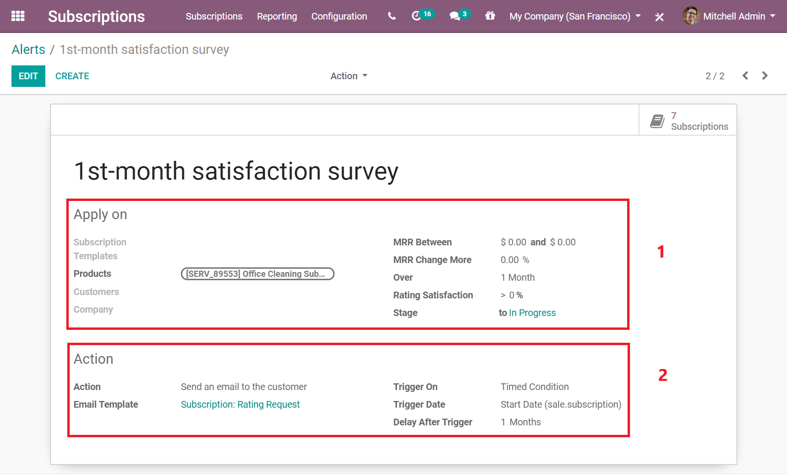
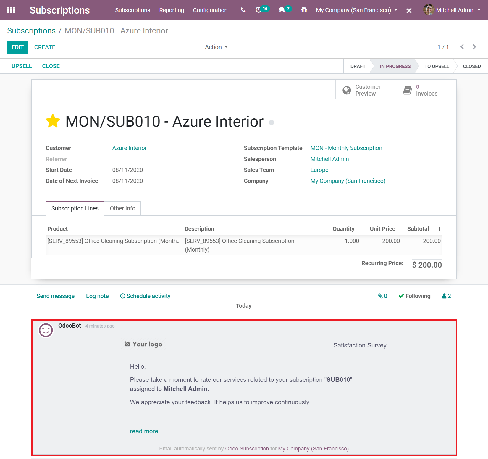
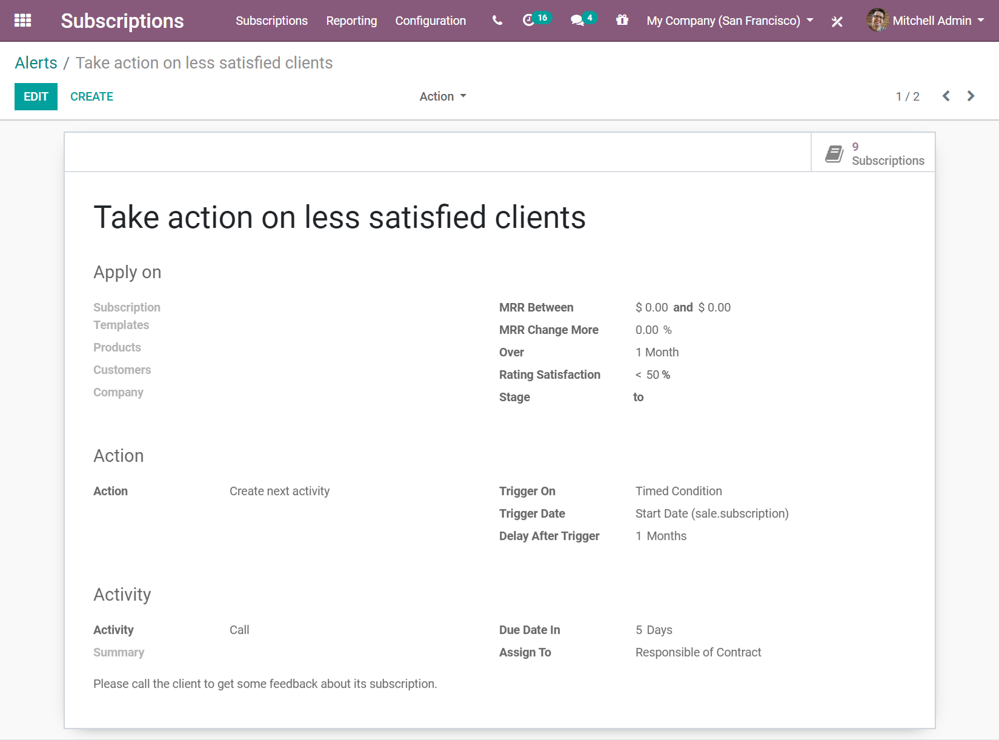

Automatic alerts¶
Now that your subscriptions are up and running, you want to stay up-to-date with your customers. Some automation would be appreciated since you would not want to go through the list of all your subscribers to check how things are going. This is what the Automatic Alerts feature is for.
For example, when customers subscribe to your magazine, you would probably want to send them an email to welcome them and express your gratitude. Or, if the satisfaction rate of your customers drops below 50%, you would probably want to schedule a call with them to understand the reasons for their dissatisfaction.
With Odoo Subscriptions, you can set automatic emails, create a “Call” task for one of your salespeople so that he/she can try to understand your customer’s dissatisfaction, and finally, why not automatically send satisfaction surveys so customers can evaluate your services? All of that is now possible.
Create a new automatic alert¶
The following example shows how to create a new automatic alert to send satisfaction surveys to your customers, by email, after one month of subscription. To do so, go to , and create a new alert.
On the Apply on section, first give the alert a name. Then, you can choose to apply this alert on a subscription template, on a specific customer, or even on a specific product. If you want to add more specifications, you can also specify the value of your MRR, the change rate of your MRR over a certain period of time, the value of the satisfaction rate, and even the stage to which you want to apply this alert.
Note
In this example, the alert is applied to a specific product, and the stage goes from Undefined to In Progress.
For the Action section, specify the Action and the Trigger on. If the Trigger on is set to Modification, the action is triggered every time there is a change or anything added to the subscription, and all the conditions on the Apply on section are met. Now, if the Trigger on is set to Timed condition, it means that the action is triggered based on the type of Trigger date. After that, you can choose your Action. You have the choice between Create next activity, Set a tag on the subscription, Set a stage on the subscription, Mark as To Renew, Send an email to the customer and Send an SMS Text Message to the customer.
Note
In the example above, the Trigger on is set to Timed condition, therefore, a Trigger date and Delay after trigger need to be specified. And because the Send an email to the customer action was adopted, an Email template can be chosen.
Note
Sending a SMS text message in Odoo requires In-App Purchase (IAP) credit or tokens. For more information on IAP, visit In-app purchases (IAP). For more information on sending SMS messages, visit SMS essentials.
As a result, this alert sends a rating survey after one month, to the customers who have purchased that specific product. The survey appears in the chatter of your respective subscription.
Modify an existing automatic alert¶
By default, Odoo suggests you an automatic alert called Take action on less satisfied clients.
This alert is applied to the Rating Satisfaction of your customers, and the action is triggered on Timed condition. If their satisfaction rate is lower than 50%, a salesperson contacts the customer. This action is automatically assigned to the salesperson who manages the subscription, and the due date is 5 days after the triggering of this action. This alert ensures that your clients are happy and that you are taking actions if they are not. It helps to keep your customer retention rates very high.
Note
By editing the alert, you can modify the Apply on, the Action and Activity sections, and adapt them to your own needs.